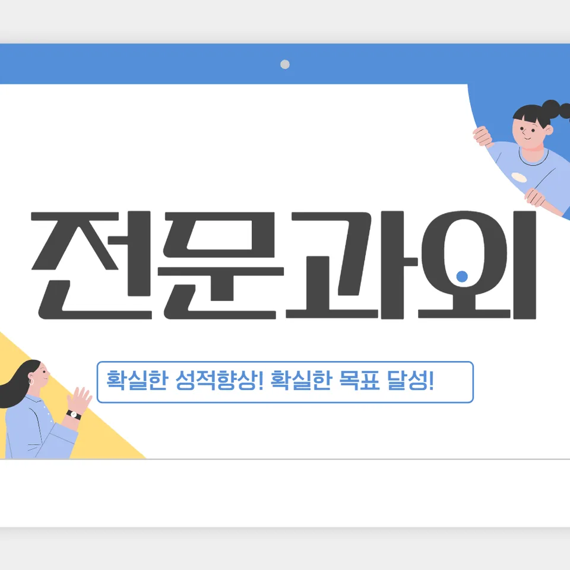

PageType : SUBJECT
URL : /경기도과외/수원시과외/권선구과외/평동과외/평동수학과외/
지역 교육환경이 수학 학습에 미치는 영향
평동수학과외를 찾는 학생들은 대체로 학교 수업을 중심으로 공부 계획을 세우지만, 지역 학습 분위기 때문에 ‘언제 무엇을 더 해야 하는지’의 감각이 흔들리곤 합니다. 평동 지역에서는 같은 학급 안에서도 준비 속도가 달라, 수업 진도를 따라가던 학생이 중간에 멈추는 일이 자주 관찰됩니다. 특히 중간고사 전후로 학원·스터디 참여 형태가 달라지면서, 평동수학과외 역시 단순 보충이 아니라 학습 리듬을 재정렬하는 방향으로 진행되는 경우가 많습니다.
학교 주변에서 문제집 중심 학습이 강해질수록, 학생들은 ‘맞히는 시간’만 늘리고 ‘생각하는 습관’은 늦게 형성합니다. 평동수학과외에서는 수학이 낯설게 느껴지는 순간을 놓치지 않도록, 수업 이후에 무엇을 정리해야 하는지부터 점검합니다. 이 과정에서 학생이 스스로 개념을 확인하고, 다음 단원을 보기 전에 필요한 연결 고리를 찾아두는지 여부가 학습 성과를 좌우합니다.
교육 현장에서는 시험 기간이 가까워질수록 난이도보다 속도에 기대는 경향이 생깁니다. 그 결과 오답을 단순히 지우는 행동으로 끝내면, 평동수학과외에서 반복 학습의 필요성이 더 커집니다. 대신 학교 수업의 흐름을 기준으로 복습 타이밍을 고정하면, 같은 내용을 다시 보더라도 부담이 덜해지고 사고력 확장이 자연스럽게 이어집니다. 평동수학과외는 이러한 ‘환경 차이’를 학습 설계로 흡수하는 데 초점을 둡니다.
학교별 평가 방식과 학습 방향
학교마다 내신 구성과 시험 운영이 다르기 때문에, 평동수학과외에서는 학생의 성적표가 말해주는 패턴을 먼저 읽는 편입니다. 어떤 학교는 계산 정확도를 더 중시하고, 또 어떤 학교는 서술형이나 과정 확인 비중이 커서 답만 맞히는 학생도 감점이 생깁니다. 이 차이를 파악하지 못하면 공부량은 늘어도 점수 변동이 둔하게 나타납니다.
수행평가가 포함된 학교에서는 단원이 끝난 뒤 ‘완성 형태’로 정리하는 시간이 필요해집니다. 평동수학과외는 그 준비가 시험 공부와 충돌하지 않게 조정하며, 개념 이해가 실제 평가 문항으로 이어지는지 확인합니다. 학생 입장에서는 문제 유형이 바뀔 때 흔들리는데, 이는 실력의 부족이라기보다 평가가 요구하는 방식에 아직 익숙하지 않은 상태인 경우가 많습니다.
학생들이 스스로 방향을 잡기 어려워지는 시점도 존재합니다. 중간고사 이후에는 ‘다음 시험 범위가 어떻게 이어지는지’를 몰라 계획이 흔들리고, 그 틈에 오답이 누적됩니다. 평동수학과외는 내신 중심의 단위 학습을 하되, 문제 해결 과정 자체가 성장하도록 학습 방향을 잡아줍니다. 결국 학교별 평가 방식은 공부 전략의 선택지를 바꾸고, 그에 맞춘 학습 설계가 필요해집니다.
학생들이 수학을 어려워하는 주요 원인
학생들이 수학에 어려움을 느끼는 첫 고비는 대개 ‘개념이 한 번에 끝나지 않을 때’입니다. 평동수학과외에서는 어떤 단원이든 설명을 듣는 순간에는 이해된 것처럼 보이지만, 다음 문제에서 조건을 바꿔 묻는 순간 막히는 흐름을 자주 마주합니다. 이때 학생은 계산이나 용어를 놓친 문제가 아니라, 개념을 상황에 적용하는 감각이 아직 형성되지 않았다는 점에서 어려움을 느낍니다.
또 다른 원인은 오답이 남아 있는 상태에서 다음 진도를 빨리 가져가는 습관입니다. 시험이 가까워지면 학생들은 틀린 문제를 ‘해설만 읽고 넘기기’로 처리하는데, 그러면 유사 문항에서 같은 실수가 반복됩니다. 평동수학과외는 오답을 사건이 아니라 데이터로 다루도록 돕고, 어떤 실수가 유형화되는지 정리하는 과정을 포함합니다. 예컨대 부호 실수, 조건 누락, 계산 순서 변경처럼 반복되는 원인을 구분하면 복습의 효율이 높아집니다.
학습 부담이 커질수록 학생들은 자신감도 같이 내려놓는 경우가 많습니다. 특히 수학을 ‘암기 과목’처럼 생각할수록, 새로운 문제를 보면 먼저 당황합니다. 평동수학과외에서는 이해-활용-점검의 연결이 끊기지 않게, 개념을 문제 해결에 쓰는 흐름을 반복적으로 체감하게 합니다. 결과적으로 사고력과 문제 해결이 분리된 기술이 아니라 이어지는 과정임을 알게 됩니다.
학년 변화에 따른 수학 학습의 차이
학년이 올라가며 수학 학습의 부담이 달라지는 이유는 단원 난이도만이 아닙니다. 학교에서 요구하는 학습 태도 자체가 변합니다. 중학교 초반에는 유형을 보고 따라 하는 방식이 어느 정도 먹히지만, 학년이 진행될수록 조건을 해석하고 선택하는 시간이 길어집니다. 평동수학과외를 시작한 학생들 중에서도 상위 학년으로 갈수록 ‘어디서부터 어떻게 생각해야 하는지’가 막히는 경우가 많습니다.
고학년으로 갈수록 내신의 문항 구성도 더 촘촘해집니다. 같은 개념이라도 형태가 변하고, 한 문항 안에서 여러 판단을 묻는 방식이 늘어납니다. 이때 복습은 단순 반복이 아니라, 이전 단원과의 연결을 다시 세우는 과정이 됩니다. 평동수학과외는 공부습관을 학년 변화에 맞춰 조정하며, 시험 대비가 단기 전략이 아니라 누적 정리로 이어지도록 설계합니다.
학기 중에는 시험 간격이 짧아져 계획을 유지하기 어려워지는데, 그럴수록 자기주도학습의 기준이 필요합니다. 학생은 스스로 “오늘 해야 할 정리”를 정해야 하고, 그 정리가 다음 시험 범위로 연결되어야 합니다. 평동수학과외는 학년이 올라갈수록 필요한 사고의 깊이를 점진적으로 올리면서도, 가정에서 감당 가능한 학습량을 기준으로 꾸준함을 유지하도록 돕습니다.
꾸준한 학습이 실력으로 이어지는 과정
평동수학과외에서 가장 자주 다루는 주제는 결국 ‘꾸준함이 만들어내는 변화’입니다. 학생은 개념을 한 번 이해했다고 해서 바로 실력이 고정되진 않습니다. 시간이 지나며 조건이 달라지고 문제 표현이 바뀌면, 이해가 다시 점검되어야 합니다. 그래서 복습이 학습 성과로 이어지는 흐름을 체감하는 것이 중요합니다.
복습은 양을 늘리는 행위가 아니라, 확인의 방향을 정하는 작업에 가깝습니다. 평동수학과외에서는 오답 정리 후에 같은 실수를 다시 일으키지 않도록, 반복 횟수와 확인 시점을 조절합니다. 이 방식이 자리 잡으면 학생은 시험 기간에 급하게 버티기보다, 평소에 쌓인 자료를 꺼내며 공부하는 패턴을 갖게 됩니다. 그 결과 시간 효율이 좋아지고, 공부습관 자체가 안정됩니다.
학부모가 가장 자주 느끼는 고민도 여기에서 연결됩니다. “열심히 하는데 왜 점수가 그대로지?”라는 질문은 보통 학습의 질과 확인 방식이 달라서 생깁니다. 평동수학과외는 학교에서 배운 내용을 기준으로, 무엇을 봐야 하는지와 어떤 점검이 필요한지에 초점을 맞춥니다. 결국 실력은 단기간의 집중이 아니라, 매주 같은 방향으로 사고를 다듬는 과정에서 만들어집니다.
문제 해결력을 키우는 학습 습관
문제 해결은 요령을 외우는 데서 시작되기보다, 문제를 만나기 전과 만난 뒤의 사고 흐름을 정리하는 데서 자라납니다. 평동수학과외에서는 학생이 문제를 읽고 조건을 정리한 다음, 어떤 정보를 먼저 사용할지 스스로 말로 옮겨보게 합니다. 이 습관이 생기면 답을 빨리 찾지 못하더라도 과정이 무너지지 않아서 오답의 성격이 선명해집니다.
또한 오답을 분석하는 방식이 달라지면 문제 해결력이 빠르게 성장합니다. 단순히 “틀렸다”에서 멈추지 않고, 실수가 생긴 지점이 계산인지 조건 해석인지 확인하는 연습을 합니다. 평동수학과외는 오답을 반복해서 보는 시간을 늘리기보다, 같은 유형의 실수가 언제, 왜 생겼는지 기록을 통해 줄여 나갑니다. 그 과정에서 학생은 사고력이 확장되는 것을 느끼기 시작합니다.
시험 기간 학습 패턴도 자연스럽게 변화합니다. 처음에는 문제를 많이 푸는 것에 집중하지만, 시간이 지나면 자신이 약한 지점만 선별해 공부하게 됩니다. 이때 계획적인 공부습관이 만들어지고, 자기주도학습이 자리 잡습니다. 결국 평동수학과외의 목표는 더 많은 문제를 푸는 데 있지 않고, 학생이 스스로 문제 해결의 기준을 세우게 하는 데 있습니다.
복습과 학습 관리가 중요한 이유
복습이 없으면 이해는 남아 있는 듯 보여도 시험 문항에서 다시 무너집니다. 특히 학교 내신이 누적되는 구조에서는, 한 단원의 취약점이 다음 단원으로 이동하면서 전체 성취를 흔듭니다. 평동수학과외에서는 시험 범위를 기준으로 복습의 우선순위를 정해, 공부량이 아니라 학습 효율이 올라가도록 돕습니다.
학습 관리는 단순 시간표가 아니라, 공부습관의 일관성을 만드는 과정입니다. 학생이 매일 무엇을 체크하고, 언제 오답을 다시 만나는지 정해져 있어야 합니다. 평동수학과외에서는 학생이 “오늘 한 것”을 내신과 연결해 설명할 수 있게 만드는 데 집중합니다. 이렇게 정리되면 시험 기간이 와도 갑작스러운 공백이 생기지 않아, 계획이 무너지지 않습니다.
학부모 입장에서는 결과를 확인하기까지 시간이 필요하기 때문에 답답함이 생기기 쉽습니다. 그러나 평동수학과외는 가정에서 학습 상태를 점검할 수 있도록, 오답의 축적 여부와 복습 진행이 어떤 흐름을 타는지 확인 항목을 구체화합니다. 이 관리가 자리 잡으면 학생은 공부의 의미를 이해하고, 자연스럽게 자기주도학습으로 옮겨갑니다.
수학 학습에서 확인해야 할 핵심 요소
학습 과정에서 확인해야 할 요소는 많지만, 공통으로 중요한 축은 몇 가지로 모입니다. 평동수학과외에서는 학교 수업과 시험 범위를 중심으로, 학생이 개념을 이해하고 활용하는지, 문제 해결 과정에서 사고가 이어지는지부터 점검합니다. 또한 복습이 언제 어떻게 연결되는지, 오답이 반복을 줄이는 방향으로 움직이는지 확인합니다.
평동수학과외를 오래 유지한 학생들은 대체로 사고력 성장의 단계를 스스로 설명할 수 있습니다. 처음에는 어떤 문제가 나왔을 때 판단이 느렸지만, 시간이 지나며 조건을 해석하는 속도와 정확도가 함께 올라갑니다. 이 변화는 누적된 확인과 정리가 만든 결과이며, 시험이 바뀌어도 흔들리지 않는 학습 기반으로 이어집니다.
마지막으로, 학교와 가정에서 이어지는 학습 환경이 균형을 이뤄야 합니다. 지역 교육 특성과 학습 문화가 다르더라도, 학생마다 다른 성장 속도를 존중하면서 꾸준히 이어지는 학습 계획을 유지하는 방식이 필요합니다. 평동수학과외는 그 균형을 잡는 과정에서 교육 현장에서 자주 관찰되는 학습 변화를 함께 점검합니다.
- 학교 수업과 시험 범위에 맞는 학습 계획을 세우고 있는지 확인합니다.
- 개념을 암기하는 데 그치지 않고 문제 해결 과정에 활용하고 있는지 점검합니다.
- 틀린 문제를 다시 풀어보며 실수의 원인을 꾸준히 분석합니다.
- 단기 성과보다 지속적인 복습과 학습 습관을 유지하고 있는지 살펴봅니다.
자주 묻는 질문
수학 학습은 언제부터 체계적으로 준비하는 것이 좋을까요?
단원을 시작하기 전 예습 감각이 아니라, 수업 직후 정리와 복습 습관이 자리 잡는 시점부터가 핵심입니다. 평동수학과외에서는 학교에서 진행되는 흐름을 기준으로 공부 시간을 안정화하는 것부터 잡아드립니다.
학교 내신과 수행평가는 어떻게 함께 준비하면 좋을까요?
시험 범위가 겹치는 구간은 개념 정리와 과정 확인을 우선으로 두고, 수행평가가 요구하는 형태에 맞게 설명과 정리 방식까지 맞춰보는 방식이 효율적입니다. 평동수학과외는 이 흐름이 충돌하지 않게 주간 단위로 조정합니다.
수학 개념이 부족한 학생도 학습 흐름을 따라갈 수 있을까요?
가능합니다. 다만 빈칸을 채우는 속도보다, 다음 문제에서 막히는 지점을 먼저 찾아 연결 고리를 만드는 방식이 필요합니다. 평동수학과외에서는 이해-활용 점검을 반복해 공백을 줄입니다.
문제 해결력은 어떤 과정을 통해 향상될 수 있을까요?
문제를 읽고 조건을 정리한 뒤, 어떤 정보를 먼저 사용할지 사고 과정을 말로 확인하고, 오답에서 실수 지점을 구분하는 과정이 반복될 때 성장합니다. 평동수학과외는 이 습관이 누적되도록 돕습니다.
꾸준한 학습 습관은 어떻게 만들어갈 수 있을까요?
처음부터 오래 하기보다, 매일 같은 기준으로 체크하고 복습 타이밍을 고정하는 것이 효과적입니다. 시험 기간에도 계획이 유지되도록 평동수학과외는 시간 효율과 자기주도학습 기준을 함께 정리합니다.
